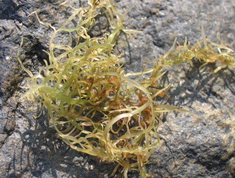

大島紬
伝統工芸品 大島紬について
大島紬とは
- 約1,300年の歴史を誇る、日本の伝統的工芸品です（734年奈良東大寺の献物帳に記録されている）
大島紬の証明ポイント（大島紬の定義、昭和５５年通産省が伝統的工芸品に指定するに当たり制定）
- 絹100%である
- 先染手織りである
- 平織りである（経（タテ）緯（ヨコ）糸は一本ごとに浮沈する織物の基本）
- 締機（しめばた）で手作業によりタテ・ヨコ絣の加工をしたもの（大島紬の絣を作る作業）
- 手機（てばた）でタテ・ヨコ絣をカスリ合わせて織り上げたもの
- *先染めとは… 糸に直接色を染付けた後に織上げる染色技法で,大島紬が先染めの代表格です。
- *後染めとは… 白生地を織り上げた後に手描き、又はプリントをして模様を出す染色技法で友禅、しぼり等が代表です。
- *絣(かすり)とは… 糸または、布面に染まった部分と括られて染まらない部分のある模様の名で（飛び白とも言う）大島紬では十の字絣といい大きな特徴です。
また、織口(はし)に検査商標がついており、奄美大島産地の登録書品名が本場奄美大島となっており、他産地、他商品とはっきり区別することができます。
泥染めとは
世界中で奄美大島だけでおこなわれている天然の染色方法です。
絹糸の蚕白質の上にシャリンバイ（バラ科の植物）に含まれているタンニン酸色素と、泥田の中の鉄分(酸化第2鉄)等が化学結合を85回以上繰り返し染色することにより、堅牢(色落ちしない)で
深く光沢のある黒色に染まります。
1セットが、シャリンバイ染めが20回、泥染め1回。これを4～5セット繰り返します。
絹の美しい光沢は動物性、シャリンバイ染の柔らかさは植物性、鉄分による鉱物性の３つの特徴を兼備えた強い繊維になりしっとりと柔らかな肌触りは親子３代譲り受ける事ができる世界で類を見ない染色技法が奄美大島紬の泥染です。
① 泥田の様子
大島紬の種類(産地証明)
① 本場奄美大島産の手織りの物（通称: 地球印）
② 鹿児島県産（通称: 旗印）
大島の産地
大島の産地は大きく分けて2種類あります。上の画像にあるように奄美大島産と鹿児島産です。
さらに種類に分けると、先染め製法等限られた中で約84種類あるそうです。
染色別が6種類、糸の配列による組織別が14種類をかけ合わせて作ることができます。以下に主な物を上げます。
染色別の分類
- 泥大島紬
- 泥藍大島紬
- 生藍大島紬
- 草木染大島紬
- 色大島紬
- 白大島紬
組織別の分類
- 9マルキ大島紬 (9.6マルキ、200目)
- 7マルキ大島紬 (7.2マルキ、150目)
- 5マルキ大島紬 (5.8マルキ、120目)
- 12マルキ大島紬 (12マルキ、240目),等
②厳格な検査基準
大島紬一反の長さ：12M50㎝(3丈2尺5寸)以上
大島紬1反の重さ: 450g以上
使用原糸絹繭: 約1700
～1800個 総長は1.800㎞～2.000㎞（ちなみに、2000㎞とは、直線で北海道の知床岬から、鹿児島のさらに南にある種子島宇宙センターまでの長さです。）
③検査24項目(検査合、不合格)
| 1 | 原料糸企画外 | 2 | 不良原料糸 | 3 | 筬（オサ）規格外 |
|---|---|---|---|---|---|
| 4 | 長さ不足 | 5 | 幅不足 | 6 | 量目不足 |
| 7 | 地合不良 | 8 | 規定外増量 | 9 | 染色不良 |
| 10 | 色むら | 11 | 染色工程不良 | 12 | 絣不鮮明 |
| 13 | 絣不揃 | 14 | 配列違い | 15 | 締班 |
| 16 | 手羽立ち | 17 | 筋引き | 18 | 縮み |
| 19 | 疵 | 20 | 汚点 | 21 | 絣糸抜け |
| 22 | 糸釣り | 23 | 汗落ち | 24 | その他本場奄美大島紬不適格と認められるもの |
ひとつでも上記の項目に当てはまらないものがあると、大島紬として認められません。
④世界三大織物の1つで代表的存在
- 大島紬
- ゴブラン織り
- ペルシャ絨毯
なかでも大島紬が一目置かれる理由は、世界で唯一２度織る織物だからです。
大島製作工程

①絣図案調整
大島紬は絣糸を作って模様を構成する先染め織物です。織る前にデザインを合わせて必要部分を必要な染料で染めます。基本は絣もよですので、締め工程で絣糸を作りますが、最初は方眼紙に絣の一つ一つを描いています 方眼紙に描かれた模様(図案)に従って絣糸を作っていきます。方眼紙のメモリに従って絣糸を作りますから、絣糸の順番を正確に並べていけば図案通りの模様が織物の上に表現されるわけです。
②淡糊付
糸繰り、整経(せいけい)を容易にするため糊付けをします。これは糸の小さな羽毛を乗りで固め、扱いやすくするためでもありますが、柄がずれないように汚れが付かないようにするための大切な工程です。薄い糊液がよく、フノリを使います。
フノリは鍋で炊き、煮沸して十分溶かし、布か目の細かい網で濾過して使うのですが、やけどするぐらい暑い糊を均等につけていきます。３回ぐらい繰り返すのですが、ここで手を抜くと泥染めの時に、色がまだらになってしまいます。このあと糊付けをしていきます。奄美大島の海藻であるイギス・フノリです。これを糊加工処理して、糊張りの糊に用います。海藻糊を使用すると、製品にしたときに「虫がつきにくい」「つやが出て風合いがよい」「加工処理がしやすい」「伸縮がよい」などの利点があります。
③絣締加工
図案に従い文様部分を固く織り込んでいきます。大島紬は締め機（しめばた）を用い、綿糸を経糸として、これに糊張り乾燥した絹糸（16本の集合体）を緯から織り込んで締めます。綿糸の太さの為織り締めした絣は筵（むしろ）のように厚くなり（0.5㎜～0.6㎜）絣筵（かすりむしろ）と呼びます。この締め織り法は、大島紬独特の絣製法です。大島紬の特徴は、精密な絣の美にありますが、曽於の秘密は、この締め機技術にあるといってよいでしょう。締め機は強い力を要しますので織機より大きく、主に男性の仕事とされています。
世界に類を見ないといわれる精密な絣模様。その秘密は織締めによる独特の絣締めにあります。 縦糸に綿糸を使い緯糸に絹糸を織り込み、その綿糸で染料の浸透を防ぎます。綿糸の本数を変えることにより点絣の大きさに変化を付け、立体感のある模様が表現できます。よく「大島は2度織る」と、言われている語源がこの工程にあります。この後泥染めをして、製織に入っていきます。
④泥染
大島紬の生命というべき泥染めには、その前提として車輪梅(シャリンバイ・テーチ木)が必要認ります。シャリンバイの幹と値を小さく割り、釜で２日⒦ん炊きっぱなしで、4.5日間寝かせて抽出液を作ります。このシャリンバイは、タンニン(色素)を大きく含みます。絹糸をシャリンバイの抽出液に20回繰り返し漬けて染めます。もちろん、一回ごとに液は好感されます。そうしないと、きれいな、あの独特の茶色には染まらないのです。
20回抽出液で染められた後、鉄分を多く含む泥田に1回漬けられます。このシャリンバイ20回・泥染め1回を1工程として、これを4～５回繰り返して、大島独特の深くそして茶がかった黒色に仕上がるのです。つまりシャリンバイ染めが80回から100回、そして 泥染めが4～5回、この化学反応で独特な黒に染め上がります。
※豆知識
泥田は個人の所有物になります。場所により塩分の濃度が違うため、染め上がりも変わってきます。また、シャリンバイは木を植えてから最低30年かかるそうです。
「職人がいなくなるのが先かシャリンバイが無くなるのが先か」といわれる程です。
⑤絣筵(かすりむしろ)部分解き
部分色差しの為、織締めしている綿糸を千枚とうしで一目ずつ切って、絣糸を露出させます。絣糸を傷つけないように、的確に取らなくてはならないので熟練の技が必要です。目破りとも言います。
⑥摺り込み
部分解きした絣に図案に元好き染料を摺り込んでいきます。スポイトとヘラで1線ずつ繰り返し繰り返し摺り込んでいく、根気のいる作業です。
⑦絣筵全解
絣筵の染色が終了したら、絣糸をすべて破り捨てます。泥染め絣は綿糸がかなり弱くなっているので両手で絹糸方向に絣糸を引き裂く形に引っ張ると綿糸が切れてきます。一枚の絣を数か所引き裂き、綿糸の屑が残らないよう綺麗に取り去ります。
⑧仕上げ糊付け
経絣糸に施します。縦糸は製織中に綜絖(そうこう)、筬(おさ)、杼(ひ)および糸間の摩擦を受けるばかりではなく、かなりの張力も受けます。適当な糊付けを行うことにより、糸がより平面に並びやすく、これらの外力に耐えるようになります。
⑨絣糸配列
経絣糸を図案に合わせ配列します。一機分ずつに分けます。
⑩経絣糸の坂巻
製織中に経絣糸がもつれないように織機にかける前に坂巻をします。地経というのは、経糸の地糸という意味です。地糸というのは、絣糸ではない、無地の糸のことです。泥大島の場合は真っ黒の無地の糸であり、白大島の場合は真っ白の糸といううことになります。地糸を木の枠に巻いていきます。きっちりまくために、細い小さな角材を巻き込んでいきます。きっちり巻くために、細い小さな角材を巻き込んでいきます。
⑪管巻き
絹糸は地糸も絣糸も管巻きをします。地糸は一組(500m)を4～6個の管に分けて巻きます。
⑫製織・手織り
締めは力がいる男性の仕事ですが、織は今期のいる女性の仕事です。高機(たかおり)による手織りで１糸１糸、心を込めて織られていきます。１反織り上げるのは、柄の難易度によっても異なりますが、１か月から数ヶ月近くかかるものもあります。
⑬製品検査
織り上げられた大島紬は、すべて本場大島紬協同組合の検査場に持ち込まれます。ここではこの道数十年のベテラン検査員が、長さ、織り巾、絣不揃い、色むら、織り疵(きず)、量目不足など、26項目に及ぶ厳重なチェックを行い、合否を決定しています。この検査の中に「泥検(どろけん)」というものがあります。この検査は、本当に泥染めをしているかどうかを調べるものです。検査の方法は、反物の端っこをほんの少しだけ切り取ります。その切れ端にシュウ酸という薬品を落とします。すると、酸に反応して泥の黒が抜けて、車輪梅による茶色が出てきます。そうなれば泥検は合格になります。